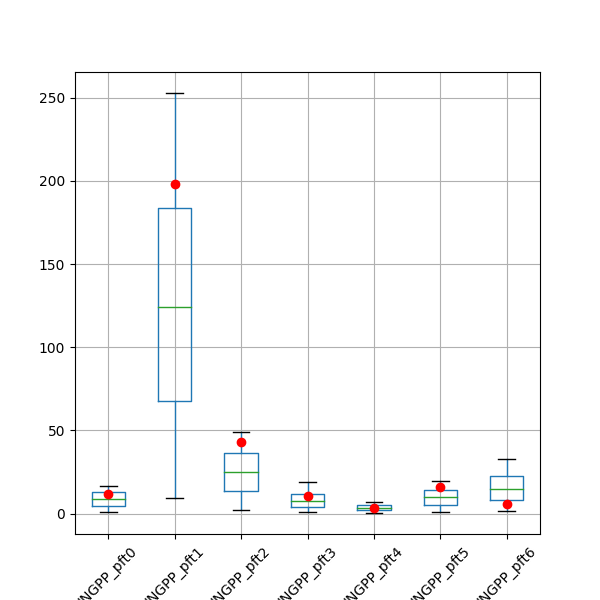

The content in these section has been auto-generated from the python
docstrings in the project.
drivers.BaseDriver
- class drivers.BaseDriver.BaseDriver(config=None, **kwargs)
Bases:
objectBase class for driver objects. Specific driver classes should inherit from BaseDriver. A driver object is intended to help with setting up and running the dvmdostem model in a variety of patterns.
- clean()
Remove the entire tree at self.work_dir.
This function is NOT CAREFUL, so be careful using it!
- classmethod fromfilename(filename)
Create an instance of BaseDriver from a configuration file.
- Parameters
filename (str) – The path to the configuration file.
- Returns
An instance of BaseDriver initialized with parameters from the configuration file.
- Return type
- load_target_data(ref_target_path=None)
Load a set of target values from a calibration_targets.py file. When the function is done, the targets will be available as a dictionary that is a data member of the Driver object. There will be an additional dict named
targets_metathat has the metadata about the targets, for example the corresponding NetCDF name, the units, etc.Targets could also be referred to as “observations”. I.e. data that was measured in the field and that model should be able to produce by simulation.
This function reads the entire calibration_target.py file but extracts only the targets for the CMTNUM of this driver object.
Note: This function loads executable code from an arbitrary loction which is probably not ideal from a security standpoint. Maybe calibration_targets.py should be re-facotred into a data file and a set of target utilities similar to the parameters files.
Modifies/Sets:
self.targets,self.targets_meta- Parameters
ref_target_path (str (path)) – A path to a folder containing a calibration_targets.py file.
- Raises
RuntimeError – If cmtnum is not set or if there’s a problem loading targets.
- Return type
None
- set_seed_path(path)
Set the seed path for the object.
Seed path is where the default parameter values for all the runs will be read from. Subsequent steps may modify select parameters for individual runs, but the original source values will be set from the seed path.
Note
Should changing the seed path force a clean? If the seed path is set or changed, this should probably trigger a re-build of all the working directories…. or warn the user…?
- Parameters
path (str) – The path to set as the seed path.
- set_work_dir(path)
Set the working directory for the object.
- Parameters
path (str) – The path to set as the working directory.
- setup_outputs(target_names)
Setup the driver’s list of output specifications based on the target (observation) names.
The client must have already loaded the targets, i.e. (
load_target_data(...)) for this to work.The resulting
BaseDriver.outputsis a list of dicts, each of which is an “output specification” which contains the information that will allow a mapping from the target names (as stored in calibration_targets.py) to the corresponding NetCDF output. Additional informations in the specification are the resolutions desired and a type signifier allowing us to differentiate between fluxes and pools, which is necessary for some summary statistics that may be calculated later.This list of output specifications will be used to setup the correct outputs in each sample specific run folder as well as conveniences like naming columns in output summary files.
Sets/Modifies:
self.outputs- Parameters
target_names (list of str) – The list should be strings naming targets in the calibration_targets.py file.
- Raises
RuntimeError – If a requested target is not found in targets dict.
- Return type
None
- drivers.BaseDriver.deduce_target_type(target, meta)
Helper function to figure out wheter a target is a flux or a pool by inspecting the metadata for a target.
TODO: Handle monthly or daily cases.
- Parameters
target (str) – The name of a target value that can be found in the calibration_targets.py file. This name should also be a key in the
metaargument.meta (dict) – A dictionary of metadata describing calibration targets from the calibration_targets.py file.
- Returns
type – ‘flux’ or ‘pool’
- Return type
str
- drivers.BaseDriver.get_target_ncname(target, meta)
Looks up the NetCDF output name based on the target name.
- Parameters
target (str) – The name of a target value that can be found in the calibration_targets.py file. This name should also be a key in the
metaargument.meta (dict) – A dictionary of metadata describing calibration targets from the calibration_targets.py file. Must include a key for the ncname (NetCDF name).
drivers.Sensitivity
- class drivers.Sensitivity.Sensitivity(config, **kwargs)
Bases:
BaseDriverSensitivity Analysis Driver class.
Driver class for conducting a
dvmdostemsensitivity analysis. Methods for cleaning, setup, running model, collecting outputs.Basic overview of use is like this:
Design your experiment by choosing working directory, seed path, parameters to use, number of samples, etc.
Instantiate driver object.
Use driver object to setup the run folders.
Use driver object to carry out model runs.
Use driver object to summarize/collect outputs.
Use SA_post_hoc_analysis script to make plots and anaylsis.
- clean()
Remove the entire tree at self.work_dir.
This function is NOT CAREFUL, so be careful using it!
- collate_results()
Gathers up all the results.csv files from individual ssrf folders and stuffs them into one giant csv file. Number of rows should match rows in sample matrix.
Writes file “results.csv” to the work dir.
- Return type
None
- core_setup(row, idx, initial=False)
Sets up a sample run folder for the given
idxandrow.The following things are assumed:
you have called set_working_directory()
you have called set_seed_path()
- you have called design experiment OR you at least have:
a sample_matrix
a list of param specs
Do all the work to setup and configure a model run. Uses the row parameter (one row of the sample matrix) to set the parameter values for the run.
Currently relies on command line API for various
dvmdostemhelper scripts. Would be nice to transition to using a Python API for all these helper scripts (modules).- Parameters
row (dict) –
One row of the sample matrix, in dict form. So like this:
{'cmax_pft0': 108.2, 'rhq10': 34.24}with one key for each parameter name.
idx (int) – The row index of the sample_matrix being worked on. Gets used to set the run specific folder name, i.e. sample_000001.
initial (bool) – A flag indicating whether the folder to be setup is the special “initial value” folder.
- Return type
None
- design_experiment(Nsamples, cmtnum, params, pftnums, percent_diffs=None, sampling_method='lhc')
Deprecated since version Implemented: in default constructor.
Builds bounds based on initial values found in dvmdostem parameter files (cmt_*.txt files) and the percent_diffs array. The percent_diffs array gets used to figure out how far the bounds should be from the initial value. Defaults to initial value +/-10%.
Sets instance values for self.params and self.sample_matrix.
- Parameters
Nsamples (int) – How many samples to draw. One sample equates to one run to be done with the parameter values in the sample.
cmtnum (int) – Which community type number to use for initial parameter values, for doing runs and analyzing outputs.
params (list of strings) – List of parameter names to use in the experiment. Each name must be in one of the dvmdostem parameter files (cmt_*.txt).
pftnums (list, same length as params list) –
Each item in the items may be one of:
int
the string ‘all’
list of ints
None
If the list item is an int, then that is the PFT number to be used for the corresponding parameter. If the list item is the string ‘all’ then ALL 10 PFTs are enabled for this parameter. If the list item is a list of ints, then the corresponding parameter will be setup for each PFT in the list. If the list item is None, then the parameter is assumed to be a soil parameter and no PFT info is set or needed.
percent_diffs (list of floats) – List values, one for each parameter in params. The value is used to set the bounds with respect to the intial parameter value. I.e. passing a value in the percent_diff array of .3 would mean that bounds should be +/-30% of the initial value of the parameter.
TODO (add somethign that lets you use non percentage based sampling range.) –
sampling_method (str) – A string indicating which sampling method to use for getting values for the sample matrix. Currently the options are ‘lhc’ or ‘uniform’.
- Return type
None
- extract_data_for_sensitivity_analysis(posthoc=True, multi=True)
Creates a csv file in each run directory that summarizes the run’s parameters and outut. The csv file will look something like this:
p_cmax, p_rhq10, p_micbnup, o_GPP, o_VEGC 1.215, 2.108, 0.432, 0.533, 5.112
with one column for each parameter and one column for each output.
For each row in the sensitivity matrix (and corresponding run folder), For each variable specified in self.outputs: - opens the NetCDF files that were output from dvmdostem - grabs the last datapoint - writes it to the sensitivity.csv file
- Parameters
posthoc (bool (Not implemented yet)) – Flag for controlling whether this step should be run after the model run or as part of the model run
multi (bool (Not implemented yet)) – Flag for if the runs are done all in one directory or each in its own directory. If all runs are done in one directory then paralleization is harder and this step of collating the output data must be done at the end of the run before the next run overwrites it.
- Return type
None
- first_steps_sensitivity_analysis()
Grab the summarized sensitivity csvs and glue them together, then make correlation matrix. When glued together, the data will look like this, with one row for each sample, and one column for each parameter followed by one column for each output:
p_cmax, p_rhq10, p_micbnup, o_GPP, o_VEGC 1.215, 2.108, 0.432, 0.533, 5.112 1.315, 3.208, 0.632, 0.721, 8.325 1.295, 1.949, 0.468, 0.560, 5.201 1.189, 2.076, 0.420, 0.592, 5.310 1.138, 2.035, 0.441, 0.537, 5.132 1.156, 1.911, 0.433, 0.557, 5.192
- Return type
None
- classmethod fromfilename(filename)
Create an instance of BaseDriver from a configuration file.
- Parameters
filename (str) – The path to the configuration file.
- Returns
An instance of BaseDriver initialized with parameters from the configuration file.
- Return type
- get_initial_params_dir()
Assumes that the working directory will have an
initial_params_rundirdirectory that will have the initial parameter values.Returns the path to the intial parameter run directory or None if the objec’t
work_dirhas not been set.
- get_sensitivity_csvs()
Looks for all the sensitivity.csv files that are present in the run directories. The sensitivity.csv files are created using the extract_data_for_sensitivity_analysis(..) funciton.
- Returns
file_list – list of paths to sensitivity.csv files, one for each file run folder
- Return type
list of strings
- info()
Print some summary info about the SensitivityDriver object.
Not sure how to best handle the summary of outputs yet. Maybe a separate method. The problem is that existing outputs may be leftover from prior runs and thus may not match the existing params and sample_matrix data. But I don’t want to be too aggressive in cleaning up old outputs incase they are expensive to re-create.
- Return type
None
- load_experiment(param_props_path, sample_matrix_path, info_path)
Load parameter properties and sample matrix from files.
- load_observations()
Might want this to handle obs for data that are not in the calibration_targets.py file. This would need to be tied in with the setup_outputs(…) function.
- load_target_data(ref_target_path=None)
Load a set of target values from a calibration_targets.py file. When the function is done, the targets will be available as a dictionary that is a data member of the Driver object. There will be an additional dict named
targets_metathat has the metadata about the targets, for example the corresponding NetCDF name, the units, etc.Targets could also be referred to as “observations”. I.e. data that was measured in the field and that model should be able to produce by simulation.
This function reads the entire calibration_target.py file but extracts only the targets for the CMTNUM of this driver object.
Note: This function loads executable code from an arbitrary loction which is probably not ideal from a security standpoint. Maybe calibration_targets.py should be re-facotred into a data file and a set of target utilities similar to the parameters files.
Modifies/Sets:
self.targets,self.targets_meta- Parameters
ref_target_path (str (path)) – A path to a folder containing a calibration_targets.py file.
- Raises
RuntimeError – If cmtnum is not set or if there’s a problem loading targets.
- Return type
None
- make_cool_plot_2()
stitches all run stages together and plots one line for each sample run.
- Return type
None
- plot_sensitivity_matrix(save=False)
Make a set of plots showing the properties of the sensitivity matrix. This plot allows you to check that the sampling strategy is producing a reasonable distribution of samples across the range. Usually you want to see that the whole range is sampled evenly between the bounds and that no samples are falling outside the bounds.
Shows one row of plots for each parameter with 3 different ways of viewing the sample distributions:
Left column is sample values with bounds marked in red.
Middle column is a histogram of sample values.
Right column is boxplot of sample values
- Parameters
save (bool) – True saves plot in
work_dirwith namesample_matrix_distributions.png- Return type
None
- post_hoc_build_all()
After the run is done, go make all the ssrf results.csv files…
Typically these are created on-the-fly in the run_model(…) function, but in some cases it is nice to build them again later.
- Return type
None
- run_all_samples()
Starts run in each Sample Specific Run Folder.
Wrapper around run_model(..) that allows for parallelization.
- run_model(rundirectory)
Run the model according to the setup.
Assumes everything is setup in a “Sample Specific Run Folder” (SSRF).
When the run is complete, summarize the output data into a csv file that is written into the SSRF. The csv file has one column for each output. The csv file should have only one row.
- Return type
None
- save_experiment(name='')
Write the parameter properties and sensitivity matrix to files.
- set_seed_path(path)
Set the seed path for the object.
Seed path is where the default parameter values for all the runs will be read from. Subsequent steps may modify select parameters for individual runs, but the original source values will be set from the seed path.
Note
Should changing the seed path force a clean? If the seed path is set or changed, this should probably trigger a re-build of all the working directories…. or warn the user…?
- Parameters
path (str) – The path to set as the seed path.
- set_work_dir(path)
Set the working directory for the object.
- Parameters
path (str) – The path to set as the working directory.
- setup_multi(force=False)
Makes one run directory for each row in sample matrix.
This is essentially a wrapper around core_setup(..) that allows for parallelization.
As a result of this function, multiple sample folders will be created in the object’s
work_dir. There will be one sample folder for each row of thesample_matrix.- Return type
None
- setup_outputs(target_names)
Setup the driver’s list of output specifications based on the target (observation) names.
The client must have already loaded the targets, i.e. (
load_target_data(...)) for this to work.The resulting
BaseDriver.outputsis a list of dicts, each of which is an “output specification” which contains the information that will allow a mapping from the target names (as stored in calibration_targets.py) to the corresponding NetCDF output. Additional informations in the specification are the resolutions desired and a type signifier allowing us to differentiate between fluxes and pools, which is necessary for some summary statistics that may be calculated later.This list of output specifications will be used to setup the correct outputs in each sample specific run folder as well as conveniences like naming columns in output summary files.
Sets/Modifies:
self.outputs- Parameters
target_names (list of str) – The list should be strings naming targets in the calibration_targets.py file.
- Raises
RuntimeError – If a requested target is not found in targets dict.
- Return type
None
- ssrf_summary2csv(list_of_data)
Transforms a list of dicts with output data into a csv.
- Parameters
list_of_data (list of dicts) – List of dicts as produced by
summarize_ssrf(..). Keys should be cmt, ncname, ctname, modeled_value, target_value and pft and compartment when applicable- Returns
data – data will be a string that is a csv file with column names being output variable (with PFT and compartment if applicable) and data will be the modeled value for that output. The csv will should have one header line and one data line.
- Return type
str, formatted csv file
- ssrf_targets2csv(data, filename)
Write a nicely formatted csv file with the target values. The column names are the NetCDF variable names with PFT and compartment if applicable. The calibration target names (names that are used for target values in the calibration_targets.py file) are included as a commented out line at the top of the file.
Including the comment line with calibration target names precludes following the API pattern of the ssrf_summary2csv(..) function, so here rather than returing the csv string, we require a path name and we write data to the file.
Writes file to
filename.- Parameters
data (list of dicts) –
Something like this:
- [ {‘cmt’: ‘CMT06’,
’ncname’: ‘INGPP’, ‘ctname’: ‘GPPAllIgnoringNitrogen’, ‘pft’: 0 ‘modeled_value’: 8.8399451693811, ‘target_value’: 11.833, }, … ]
- Return type
None
- summarize_ssrf(output_directory_path)
Grabs the modeled data from the run and collates it into a list of dicts that can then be easily transformed into other formats. The intention here is to create a list of dicts that can be fed directly into a
pandas.DataFramewith labeled columns.And there should be one dict in the list for each variable the outputs list.
NOTE: This function takes extract the data from the output netcdf files and takes the mean over the last 10 timesteps!
- Parameters
output_directory_path (str (path)) – Path to a Sample Specific Run Folder (ssrf).
- Returns
data – One dict for each output that is specified. The keys in the dicts will be cmt, ncname, ctname, modeled_value, target_value and pft and compartment when applicable. For example:
- { ‘cmt’: ‘CMT06’,
’ncname’: ‘INGPP’, ‘ctname’: ‘GPPAllIgnoringNitrogen’, ‘modeled_value’: 6.743048039242422, ‘target_value’: 11.833, ‘pft’: 0 }
There will be one dict in the returned list for each output variable.
- Return type
[{…}, … {…}], list of dicts
- drivers.Sensitivity.generate_lhc(N, param_props)
Generate sample matrix using Latin Hyper Cube method.
Sample matrix will have one row for each “sample” of the parameters. There will be one column for each parameter in the param_props list.
- For example:
>>> generate_lhc(3, ... [ {"name": "rhq10", "bounds": [0, 5]}, ... {"name": "cmax", "bounds": [10, 20]} ]) rhq10 cmax 0 0.419637 10.949468 1 4.162081 13.456290 2 2.168131 18.698548
- Parameters
N (int) – number of samples (rows) to create
param_props (list of dicts) – Each item in param_props list will be a dictionary with at least the following: >>> param_props = { … ‘name’: ‘cmax’, # name in dvmdostem parameter file (cmt_*.txt) … ‘bounds’: [100.1, 105.1], # the min and max values the parameter can have … }
- Returns
df – There will be one column for each parameter in the param_props list and N rows (samples).
- Return type
pandas.DataFrame, shape (N, len(param_props))
- drivers.Sensitivity.generate_uniform(N, param_props)
Generate sample matrix using uniform method.
Sample matrix will have one row for each “sample” of the parameters. There will be one column for each parameter in the param_props list.
- For example:
>>> generate_uniform(3, ... [ {"name": "rhq10", "bounds": [0, 5]}, ... {"name": "cmax", "bounds": [10, 20]} ]) rhq10 cmax 0 2.513395 10.514788 1 1.393232 19.082659 2 1.197809 11.448949
- Parameters
N (int) – number of samples (rows) to create
param_props (list of dicts) – Each item in param_props list will be a dictionary with at least the following: >>> param_props = { … ‘name’: ‘rhq10’, # name in dvmdostem parameter file (cmt_*.txt) … ‘bounds’: [5.2, 6.4], # the min and max values the parameter can have … }
- Returns
df – There will be one column for each parameter in the param_props list and N rows (samples).
- Return type
pandas.DataFrame, shape (N, len(param_props))
- drivers.Sensitivity.log_wrapper(message)
Print the
messagewith the process name at the beginning.Use via a context manager, for example:
To get something like this:
- drivers.Sensitivity.make_col_name(pdict)
Make standardized column names for parameters.
Expects
pdictto be a dictionary of items related to a parameter, e.g.:- Returns
col_name – A string to use for the sample_matrix column name. Should be simply the parameter name for non-PFT parameters and for PFT parameters, the name should be suffixe with _pftN where N is the PFT number.
- Return type
str
- drivers.Sensitivity.params_from_seed(seedpath, params, pftnums, percent_diffs, cmtnum)
Builds a list of “param specifications” from the data in the seedpath and for params specified in params for the pfts specified in pftnums and the Community specified in cmtnum. Sets bounds based on the intial values found in the seedpath and according to the percent_diffs.
NOTE: What happens for negative numbers? Do the bounds need to be reversed?
drivers.MadsTEMDriver
- class drivers.MadsTEMDriver.MadsTEMDriver(config=None, **kwargs)
Bases:
BaseDriverMadsTEMDriver class for controlling and running the driving the dvmdostem model from a Julia script with the Mads package.
This class extends the functionality of the BaseDriver class and includes methods for setting up the run directory, updating parameters, running the model, and gathering model outputs.
- clean()
Remove the entire tree at self.work_dir.
This function is NOT CAREFUL, so be careful using it!
- classmethod fromfilename(filename)
Create an instance of BaseDriver from a configuration file.
- Parameters
filename (str) – The path to the configuration file.
- Returns
An instance of BaseDriver initialized with parameters from the configuration file.
- Return type
- gather_model_outputs()
Gather and process model outputs for comparison with target data.
Migrated from TEM.py::get_calibration_outputs.py.
The implementation in TEM.py was tangled up with logic for loading target data and included the unused calculation of “percent ecosystem contribution” (pec) which can be used for weighting…but the pec was not being used in this context, so it has been removed here. See util/qcal.py for an example of its use.
- Returns
A list containing dictionaries with information about model outputs. For example:
[{'cmt': 'CMT06', 'ctname': 'GPP', 'value': 10.1, 'truth': 11.83, 'pft': 0}, {'cmt': 'CMT06', 'ctname': 'GPP', 'value': 29.05, 'truth': 197.8, 'pft': 1}, ... ]
- Return type
list
- load_target_data(ref_target_path=None)
Load a set of target values from a calibration_targets.py file. When the function is done, the targets will be available as a dictionary that is a data member of the Driver object. There will be an additional dict named
targets_metathat has the metadata about the targets, for example the corresponding NetCDF name, the units, etc.Targets could also be referred to as “observations”. I.e. data that was measured in the field and that model should be able to produce by simulation.
This function reads the entire calibration_target.py file but extracts only the targets for the CMTNUM of this driver object.
Note: This function loads executable code from an arbitrary loction which is probably not ideal from a security standpoint. Maybe calibration_targets.py should be re-facotred into a data file and a set of target utilities similar to the parameters files.
Modifies/Sets:
self.targets,self.targets_meta- Parameters
ref_target_path (str (path)) – A path to a folder containing a calibration_targets.py file.
- Raises
RuntimeError – If cmtnum is not set or if there’s a problem loading targets.
- Return type
None
- modeled_vec()
Return a flat list of the model output values.
- observed_vec(format='labeled')
Return a list of the observation values (aka targets).
The target values are included in the model output data structures, and could be accessed exactly like the modeled_vec() function but if you have not yet run the model you don’t have outputs ready and therefore can’t read them. There are cases where you would like to see the target values without running the model, so we will assemble them here from the self.targets data structure.
- Parameters
format ({'labeled', 'flat'}) – Choose the format that returned data will be in. ‘labeled’ data will be a list of dicts that can be converted to Pandas DataFrame. ‘flat’ data will return a flat list in the order: [ pft0_leaf,pft0_stem,pft0_root, … pftN_leaf, pftN_stem, pftN_root ]
- Returns
target_data – The target data, organized as specified with format parameter.
- Return type
iterable
- params_vec()
Return a flat list of the parameter values.
- run()
Run the model according to the setup.
Assumes everything is setup in the
runsubdirectory ofself.work_dir- Return type
None
- run_wrapper(parameter_vector)
Run the model using a vector of parameters and return model outputs.
Takes in a vector of parameters; uses the parameters to run the model and returns a collection of outputs. Outputs are intended to be compared to target data. So if you have 5 targets you are comparing to, you should expect 5 output variables
- Parameters
parameter_vector (list) – A list of parameter values to use for the model run.
- Returns
A collection of model outputs intended to be compared to target data.
- Return type
list
- set_params_from_seed()
Sets up a list of dicts mapping parameter names to values….
Note
Assumes that various things have been setup:
self.cmtnumself.paramnamesself.pftnumsself._seedpath
Analogous to
Sensitivity.params_from_seed(...)but this one uses a different name in the dict (‘vals’ vs ‘intial’) and this is setup as a member function that modifies/updates a member variable (self.params) whereas in Sensitivity, it is a stand alone module function… Would be great to combine these…Migrated directly from TEM.py::set_params(…)
This function simply modifies the objects params lookup structure. It does not actually modify parameters in the run directory…
- set_seed_path(path)
Set the seed path for the object.
Seed path is where the default parameter values for all the runs will be read from. Subsequent steps may modify select parameters for individual runs, but the original source values will be set from the seed path.
Note
Should changing the seed path force a clean? If the seed path is set or changed, this should probably trigger a re-build of all the working directories…. or warn the user…?
- Parameters
path (str) – The path to set as the seed path.
- set_work_dir(path)
Set the working directory for the object.
- Parameters
path (str) – The path to set as the working directory.
- setup_outputs(target_names)
Setup the driver’s list of output specifications based on the target (observation) names.
The client must have already loaded the targets, i.e. (
load_target_data(...)) for this to work.The resulting
BaseDriver.outputsis a list of dicts, each of which is an “output specification” which contains the information that will allow a mapping from the target names (as stored in calibration_targets.py) to the corresponding NetCDF output. Additional informations in the specification are the resolutions desired and a type signifier allowing us to differentiate between fluxes and pools, which is necessary for some summary statistics that may be calculated later.This list of output specifications will be used to setup the correct outputs in each sample specific run folder as well as conveniences like naming columns in output summary files.
Sets/Modifies:
self.outputs- Parameters
target_names (list of str) – The list should be strings naming targets in the calibration_targets.py file.
- Raises
RuntimeError – If a requested target is not found in targets dict.
- Return type
None
- setup_run_dir()
Set up the run directory for the model using properties of the driver object to control aspects of how the run directory is configured.
This method creates the working directory, adjusts the run mask for the appropriate pixel, sets the output specification file, and adjusts the configuration file.
- update_params(vector, junk=None)
Update the values in
self.paramswith values invector.Note
This does not actually update anything the run directory. See the other function,
write_params2rundir(...)for that. Maybe these functions should be combined? Is there ever a reason to update the internal data structure (self.params) without writing the data to the run directory?- Parameters
vector (list) – A list of parameter values to update.
junk (None, optional) – Ignored parameter. Provided for compatibility.
- Return type
None
- write_params2rundir()
Update the parameters in the run directory to match those in
self.params.This method iterates through the parameters in the internal params table and updates the corresponding values in the run directory using the pu.update_inplace function.
- Return type
None
mads_calibration.SA_post_hoc_analysis
- SA_post_hoc_analysis.calc_combined_score(results, targets)
Calculate a combination score using r^2, and normalized mse and mape.
- SA_post_hoc_analysis.calc_correlation(model_results, sample_matrix)
Generate a correlation matrix between parameters and model outputs.
- Parameters
sample_matrix (pandas.DataFrame) – with one row per sample, one column per parameter
model_results (pandas.DataFrame) – with one row per sample, one column per output
- Returns
corr_mp – One column for each parameter, one row for each model output.
- Return type
pandas.DataFrame
- SA_post_hoc_analysis.calc_metrics(results, targets)
Calculate a bunch of sklearn regression metrics.
- SA_post_hoc_analysis.equilibrium_check(eq_params, targets, cv_lim=15, p_lim=0.1, slope_lim=0.001, save=False, saveprefix='')
Calculates percentage of samples which pass user input (or default) equilibrium test and plots a bar graph.
- Parameters
eq_params (Pandas DataFrame) – equilibrium quality dataframe for a single target variable
targets (Pandas DataFrame) – Used to read in target variable names
cv_lim (float) – coefficient of variation threshold as a %
p_lim (float) – p-value threshold as a %
slope_lim (float) – slope threshold as a fraction of target variable
Returns –
- countsPandas DataFrame
Pass / Fail percentage for each variable
- eq_checkPandas DataFrame
Boolean for each variable comprising of cv, p, slope test
- eq_dataPandas DataFrame
Boolean for each variable and each test for more thorough inspection
image: (..) – /images/SA_post_hoc_analysis/eq_plot.png:
- SA_post_hoc_analysis.generate_ca_config()
Maybe we should auto-generate the yaml config files?
- SA_post_hoc_analysis.load(path)
Load up pandas.DataFrames for all the various things that you will want to analyze. This includes the parameter properties used for the SA, the sample matrix, the target data and the model results.
- Parameters
path (str) – A file path to a directory that is expected to have the following files: param_props.csv, sample_matrix.csv, targets.csv, results.csv.
- Return type
param_props, sample_matrix, targets, results
- SA_post_hoc_analysis.n_top_runs(results, targets, params, r2lim, N=None)
Get the best runs measured using R^2, if N is present sort and return N top runs.
- Parameters
results (pandas.DataFrame) – One column for each output variable, one row for each sample run.
targets (pandas.DataFrame) – One column for each output (target) variable, single row with target value.
params (pandas.DataFrame) – One row for each of the selected runs, one column for each parameter.
r2lim (float) – Lower R^2 limit for output.
N (integer, optional) – Number of sorted results to return
- Returns
best_params (pandas.DataFrame) – parameters returning variables above R^2 threshold from target value, sorted top N number if None!=None
best_results (pandas.DataFrame) – results above R^2 threshold from target value, sorted top N number if None!=None
- SA_post_hoc_analysis.nitrogen_check(path='', biome='boreal', save=False, saveprefix='')
Plots INGPP : GPP ratio to examine nitrogen limitation and compares to expected ranges for boreal and tundra ecosystems.
Note: this requires auxiliary variables INGPP, GPP, and AVLN to be specified in the config file. If calib_mode is set to GPPAllIgnoringNitrogen this will not produce meaningful results.
- Parameters
path (str) – Specifies path to sensitivity sample run directory
- Returns
None
.. image:: /images/SA_post_hoc_analysis/n-check-comp-plot.png
.. image:: /images/SA_post_hoc_analysis/n-check-barplot.png
- SA_post_hoc_analysis.plot_boxplot(results, targets, save=False, saveprefix='')
Plots a box and whiskers for each column in
results. Plots a dot for each target value.Useful for seeing if the range of model outputs produced by running each row in the sample matrix contains the target values.
- Parameters
results (pandas.DataFrame) – One column for each model ouput variable, one row for each run (sample)
targets (pandas.DataFrame) – One column for each target (truth, or observation) value. One row.
save (bool) – Assumes False so plot will not be saved. If set to true it will plot in current directory unless saveprefix is specified
saveprefix (str) – A string that is prepended to the saved filename ‘results_boxplot.png’
- Return type
None
{kind=link}
- SA_post_hoc_analysis.plot_corr_heatmap(df_corr, save=False, saveprefix='')
??? Write something…

- SA_post_hoc_analysis.plot_equilibrium_metrics_boxplot(eq_params, targets, cv_lim=15, p_lim=0.1, slope_lim=0.001, save=False, saveprefix='')
Plots equilibrium metrics against certain quality thresholds for a target variable
- Parameters
eq_params (Pandas DataFrame) – equilibrium quality dataframe for a single target variable
targets (Pandas DataFrame) – Used to read in target variable names
cv_lim (float) – coefficient of variation threshold as a %
p_lim (float) – p-value threshold as a %
slope_lim (float) – slope threshold as a fraction of target variable
save (bool) – saves figure if True
saveprefix (string) – path to use if saving is enabled
Returns – None
image: (..) – /images/SA_post_hoc_analysis/eq_metrics_boxplot.png:
- SA_post_hoc_analysis.plot_equilibrium_metrics_scatter(eq_params, targets, cv_lim=15, p_lim=0.1, slope_lim=0.001, save=False, saveprefix='')
Plots equilibrium metrics against certain quality thresholds for a target variable
- Parameters
eq_params (Pandas DataFrame) – equilibrium quality dataframe for a single target variable
targets (Pandas DataFrame) – Used to read in target variable names
cv_lim (float) – coefficient of variation threshold as a %
p_lim (float) – p-value threshold as a %
slope_lim (float) – slope threshold as a fraction of target variable
save (bool) – saves figure if True
saveprefix (string) – path to use if saving is enabled
Returns – None
image: (..) – /images/SA_post_hoc_analysis/eq_metrics_plot.png:
- SA_post_hoc_analysis.plot_equilibrium_relationships(path='', save=False, saveprefix='')
Plots equilibrium timeseries for target variables in output directory
- Parameters
path (str) – specifies path to sensitivity sample run directory
save (bool) – saves figure if True
saveprefix (string) – path to use if saving is enabled
Returns – None
image: (..) – /images/SA_post_hoc_analysis/eq_rel_plot.png:
- SA_post_hoc_analysis.plot_match(results, targets, save=False, saveprefix='')
Plot targets vs model outputs (results). Dashed diagonal is line of perfect agreement between the model output and the targets. Plot dot or marker for each model output. Targets are on the y axis, model outputs on the x axis.
There is a horizontal collection of markers for each column in results. If the collection of markers crosses the dashed 1:1 line, then the model is capable of producing target values somewhere in the sample set. If the collection of markers for a given column (model output) is all to the left of the 1:1 line, then the modeled values are all too low. If the collection of markers is all to the right of the 1:1 line then the modeled values are too high.

- Parameters
results (pandas.DataFrame) – One row for each run (sample), one column for each model output variable.
targets (pandas.DataFrame) – Single row, one column for each target (truth, or observation) value.
save (bool) – Assumes False so plot will not be saved. If set to true it will plot in current directory unless saveprefix is specified
saveprefix (str) – A string that is prepended to the saved filename ‘results_boxplot.png’
- Return type
None
- SA_post_hoc_analysis.plot_output_scatter(results, targets, r2lim=None, rmselim=None, mapelim=None, save=False, saveprefix='')
Create subplots for each column in
results. Each subplot shows scatter plots of the output value on the Y axis and the sample # on the X axis. The target value is shown as a dashed line.Optionally,
resultsmay be limited by R^2, RMSE, and/or MAPE by providing limits using r2lim, rmselim, and mapelim respectively.Note
Not sure if this approach of putting everything in one giant figure will scale up with number of output variables very well…
- Parameters
results (pandas.DataFrame) – One column for each output variable, one row for each sample run.
targets (pandas.DataFrame) – One column for each output (target) variable, single row with target value.
r2lim (float, optional) – Lower R^2 limit for output.
rmselim (float, optional) – Upper RMSE limit for output.
mapelim (float, optional) – Upper MAPE limit for output.
save (bool) – Assumes False so plot will not be saved. If set to true it will plot in current directory unless saveprefix is specified
saveprefix (str) – A prefix to be prepended to the saved file name ‘output_target_scatter.png’
- Returns
None
.. image:: /images/SA_post_hoc_analysis/output_target_scatter.png
- SA_post_hoc_analysis.plot_pft_matrix(results, sample_matrix, targets, save=False, saveprefix='')
Look at the model outputs and the parameters, and plot all parameters against each variable for 10 potential pfts
- Parameters
results (pandas.DataFrame) – One row per sample, one column per output.
sample_matrix (pandas.DataFrame) – One row per sample, one column per parameter.
targets (pandas.DataFrame) – One row with one column per target value.
save (bool) – Assumes False so plot will not be saved. If set to true it will plot in current directory unless saveprefix is specified
saveprefix (str) – A string that is prepended to the saved filename ‘{var}_pft_plot.pdf’
- Returns
None
.. image::
- SA_post_hoc_analysis.plot_r2_rmse(results, targets, save=False, saveprefix='')
Plot R^2 against RMSE as a scatter plot for all runs
- Parameters
results (pandas.DataFrame) – One row per sample, one column per output.
sample_matrix (pandas.DataFrame) – One row per sample, one column per parameter.
targets (pandas.DataFrame) – One row with one column per target value.
save (bool) – Assumes False so plot will not be saved. If set to true it will plot in current directory unless saveprefix is specified
saveprefix (str) – A string that is prepended to the saved filename ‘{var}_pft_plot.pdf’
- Returns
None
.. image:: /images/SA_post_hoc_analysis/r2_mse_mape.png
- SA_post_hoc_analysis.plot_relationships(results, sample_matrix, targets, variables=None, parameters=None, corr_threshold=None, save=False, saveprefix='')
Look at the model outputs and the parameters, calculate the corrleation between the two, and then make one plot for each instance where the correlation exceeds the threshold.
- Parameters
results (pandas.DataFrame) – One row per sample, one column per output.
sample_matrix (pandas.DataFrame) – One row per sample, one column per parameter.
targets (pandas.DataFrame) – One row with one column per target value.
variables (list, optional) – Strings referencing variables of interest in results
parameter (list, optional) – Strings referencing parameers of interest in sample_matrix
corr_threshold (float, optional) – Lower threshold for correlation to plot
save (bool) – Assumes False so plot will not be saved. If set to true it will plot in current directory unless saveprefix is specified Saves all subplots (can be a lot) if != None
saveprefix (str) – A string that is prepended to the saved filename ‘{var}-{parameters}.png’
- Returns
None
.. image:: /images/INGPP_pft0-cmax_pft0-cmax_pft3.png
- SA_post_hoc_analysis.plot_spaghetti(results, targets, save=False, saveprefix='')
Plots one line for each sample (row) in
results. Plots targets as dots. X axis of plot are for different columns inresults. Makes 2 plots, the right one uses a log scale for the y axis. The right plot also has a mean line (blue).Useful for seeing if the range of model outputs produced by running each row in the sample matrix contains the target values.

- Parameters
results (pandas.DataFrame) – One row for each run (sample), one column for each model output variable.
targets (pandas.DataFrame) – Single row, one column for each target (truth, or observation) value.
save (bool) – Assumes False so plot will not be saved. If set to true it will plot in current directory unless saveprefix is specified
saveprefix (str) – A string that is prepended to the saved filename ‘spaghetti_plot.png’
- Return type
None
- SA_post_hoc_analysis.prep_mads_distributions(params, fmt=None)
Gives you something like this:
mads_paramdist: - Uniform( 5.9117, 26.5927) # cmax_pft0 - Uniform( 46.0129, 113.4639) # cmax_pft1 - Uniform( 11.7916, 77.5827) # cmax_pft2
From B. Maglio’s notebook.
- Parameters
params (pandas.DataFrame) – One row for each of the selected runs, one column for each parameter. Column names are
fmt (str) – A user supplied format string specification. Should be something that you would find on the right side of the colon in an f string format spec, for example something like: ‘8.3f’ or ‘3.5f’
- Returns
dists – A nicely formatted string with the distributions for each parameter that can be pasted into the .yaml file for the next step.
- Return type
string
- SA_post_hoc_analysis.prep_mads_initial_guess(params, fmt=None)
Generate MADS initial guess string based on parameter ranges. The idea is that the intial guess should be the mean of the parameter range. Gives you a string like this:
mads_initialguess: - 16.252 # cmax_pft0 - 79.738 # cmax_pft1 - 44.687 # cmax_pft2
that is intended to be copied into your
.yamlconfig file.- Parameters
params (pandas.DataFrame) – A DataFrame containing parameter values.
fmt (str) – A user supplied format string specification. Should be something that you would find on the right side of the colon in an f string format spec, for example something like: ‘8.3f’ or ‘3.5f’
- Returns
MADS initial guess string.
- Return type
str
- SA_post_hoc_analysis.read_mads_iterationresults(iterationresults_file)
Parse a Mads .iterationresults file and return data as 3 python lists.
Example of the input file:
OrderedCollections.OrderedDict("cmax_pft0" => 26.245, "cmax_pft1" => ... ) OF: 1.985656773338984e8 lambda: 4.0e9 OrderedCollections.OrderedDict("cmax_pft0" => 26.245, "cmax_pft1" => ... ) OF: 1.6545342e4353453e6 lambda: 1.4e6
These are general purpose utility scripts for working with dvmdostem.
util.param
- class util.param.ParamUtilSpeedHelper(pdir)
Experimenting with having an object oriented API so that we can cache some data in the object. Will save lots of time for various look up type functionality.
With param.py in general the idea has been to have it be flexible with repsect to the location of the parameter files. But that makes some operations expensive because the code is constantly having to re-build lookup data structures to find parameter names or files.
With this object the idea is to set the parameter directory upon instantiation, and build the lookup data structure. Then future operations can use that cached structure.
Examples
>>> import util.param >>> psh = util.param.ParamUtilSpeedHelper("/work/parameters") >>> psh.get_value(pname='cmax', cmtnum=4, pftnum=3, with_metadata=False) 13.45
- get_value(pname=None, cmtnum=None, pftnum=None, with_metadata=False)
Look up the parameter value by name for given CMT and PFT.
- Parameters
pname (str) – Name of parameter as found in dvmdostem parameter files.
cmtnum (int) – The number of the community type to grab data from.
pftnum (int) – The PFT of the data to grab (for PFT parameters), None (default) for non-pft parameters.
with_metadata (bool) – (not implemented yet) flag for returning just the raw data or a package with more metadata (e.g. param directory, filename, etc)
- Returns
v – The parameter value, or if with_metadata=True, a dict with more info.
- Return type
float
- list_non_pft_params(cmtnum=None)
Gets a listing of all non-PFT parameters.
- Parameters
cmtnum (int) – The CMT number to read from.
- Returns
s – A formatted string of all non-PFT parameters, (i.e. soil params)
- Return type
str
- list_params(cmtnum=None, pftnum=None)
Builds and returns a formatted string listing all the parameters for a given CMT and PFT.
- Parameters
cmtnum (int) – The community type number to list parameters for.
pftnum (int) – The PFT number to list parameters for.
- Returns
s – A formatted string listing all the parameters for a given CMT and PFT.
- Return type
string
- util.param.build_param_lookup(pdir)
Builds a lookup table, mapping file names to lists of parameters (separate lists for PFT and non PFT params).
- Parameters
pdir (str Path to a folder of parameter files.) –
- Returns
lu – A dictionary mapping file names to lists of parameters (pft and non-pft) e.g.
lu = { 'cmt_calparbgc.txt': { 'non_pft_params':['kdcsoma', ...], 'pft_params':['cmax', ...] }, 'cmt_bgcsoil.txt': { 'non_pft_params':['kdcsoma', ...], 'pft_params':[] }, }
- Return type
dict
- util.param.cmdline_define()
Define the command line interface and return the parser object.
- util.param.cmdline_parse(argv=None)
Define and parse the command line interface.
When argv is None, the parser will evaluate sys.argv[1:]
- Returns
args – A Namespace object with all the arguments and associated values.
- Return type
Namespace
- util.param.cmtdatablock2dict(cmtdatablock)
Converts a “CMT datablock” (list of strings) into a dict structure.
- Parameters
cmtdatablock ([str, str, ...]) – A list of strings (with new lines) holding parameter data for a CMT.
- Returns
cmtdict – A multi-level dict mapping names (deduced from comments) to parameter values.
- Return type
dict
- util.param.comment_splitter(line)
Splits a string into data before comment and after comment.
The comment delimiter (‘//’) will be included in the after component.
- Parameters
line (str) – A string representing the line of data. May or may not contain the comment delimiter.
- Returns
A tuple containing the “before comment” string, and the “after comment” string. The “after commnet” string will include the comment charachter.
- Return type
(str, str) - Tuple of strings.
- util.param.compare_CMTs(fileA, cmtnumA, fileB, cmtnumB, ignore_formatting=True)
Compares the specified CMT data blocks in each file line by line, prints “Match” if the lines are the same, otherwise print the lines for visual comparison.
By running the datablocks thru the format function, we can compare on values and ignore whitespace/formatting differences.
- Parameters
fileA (str) – Path to file for comparison.
cmtnumA (int) – Number of CMT for comparison.
fileB (str) – Path to file for comparison.
cmtnumB (int) – Number of CMT for comparison.
ignore_formatting (bool) – When True (default) it is easy to see how the numbers differ. When this setting is False, lines with different formatting will not match, i.e. 0.0 and 0.000 will show up as different.
- Return type
None
- util.param.converter(x)
Convert data to float type for printing. Converts empty string to 0.0
- Parameters
x (anything) –
- Returns
If x castable to a float, a float is returned. If x is an empty string, 0.0 is returned. Otherwise x is returned un-modified.
- Return type
float
- util.param.csv2fwt_v1(csv_file, ref_directory='../parameters', overwrite_files=None, ref_targets=None)
Convert from csv parameter files to fixed width text format.
Uses csv_v1_specification().
Unrefined function that depends on the csv file being appropriately formatted in a variety of ways, including at least:
consistent pft names
all variables present
calibration targets variables for leaf/stem/roots being named as follows - VegCarbon:Leaf, etc - VegStructuralNitrogen:Leaf, etc
PFT names <= 12 characters long
consistent CMT names
- Parameters
csv_file (string, path) – Path to an input csv file to convert.
ref_directory (string, path) – Path to a folder containing parameter files to be used as reference for formatting the resulting fixed width data.
ref_targets (string, path) – Path to a calibration_targets.py file that will be used for reference in formatting the resulting data.
overwrite_files (bool) – (experimental) Flag for determining whether to print results to stdout (default) or to overwrite the data in the reference files. May not work if the CMT number in the csv file is not present in the reference files.
- Returns
Returns zero upon successful completion.
- Return type
int
- util.param.csv_v0_find_section_starts(data)
Gets the starting index and name for sections of data in a specially formatted csv file.
Deprecated since version 0.6.1: csv_v0 format will be removed in later versions!
Assumes that data is a list of lines read from a csv file. See help (docstring) for csv_v0_specification().
- Parameters
data (list of strings, required) – Assumed to be a list generated by reading a csv file that is formatted as in csv_v0_specification.
- Returns
A list of tuples, where the first item in the tuple is the index in the csv file where the section starts, and the second item in the tuple is the text name for the section, as read from the file.
- Return type
list
- util.param.csv_v0_get_pftnames(data)
Retrieves PFT names from a specially formatted csv file.
Deprecated since version 0.6.1: csv_v0 format will be removed in later versions!
Assumes that data is a list of lines read from a csv file that is formatted according to the csv_v0_specification. See help for the csv_v0_specification() function.
- Parameters
data (list of strings, required) – Assumed to be a list generated by reading a csv file that is formatted as described above.
- Returns
A list of pft names read from the incoming data.
- Return type
list
- util.param.csv_v0_get_section(data, start)
Extracts a section of block of data from a specially formatted csv file.
Deprecated since version 0.6.1: csv_v0 format will be removed in later versions!
Assumes that data is a list of lines read from a csv file. See help (the docstring) for the csv_v0_specification() function to get more details on how the csv file should be setup.
- Parameters
data (list of strings, required) – Assumed to be a list generated by reading a csv file that is formatted as described in the docstring for csv_v0_specification()
start – The index in the data list where the section starts.
- Returns
The list of lines (rows) from data that belongs to a section or block.
- Return type
list
- util.param.csv_v0_specification()
Specification for csv files that hold parameter data.
Deprecated since version 0.6.1: csv_v0 format will be removed in later versions!
This csv format is intended to be used as a bridge between Excel and the dvmdostem space delimited parameter files. Expected usage: A user maintains or develops a spreadsheet with parameter data. Then user exports this spreadsheet to csv file. The utility functions in this script can then be used to parse the csv file and re-format the data as space delimited text that can be copied into dvmdostem parameter files.
The csv file should be setup as follows:
The csv file must have blank rows (lines) separating each section, or block of data. Generally each block of data will be intended for a different parameter file, i.e. cmt_envcanopy.txt, etc.
Each section must start with a row that has all CAPS text in the first column and no data in the subsequent columns.
There must be a row in the file with ‘pft name’ in the first column followed by names for each PFT in the subsequent columns. These names will be applied to all the sections of data in the file.
There must not be more than 10 PFT columns.
CAVEATS: PFT names will be converetd to CamelCase, comments will not be preserved or added to the file, the CMT number won’t be filled out, and no verification is done to see if there is a conflicting CMT number in any existing parameter files.
Examples
$ cat example.csv ,,,, pft name,EVR TREE,DEC SHRUB,DEC TREE,MOSS ,,,, CALIBRATION TARGETS,,,, GPPAllIgnoringNitrogen,306.07,24.53,46.53,54.20 NPPAllIgnoringNitrogen,229.91,18.42,34.98,40.65 NPPAll,153.03,12.26,23.26,27.1 ,,,, BCGVEGETATION,,,, kc,400,400,400,400 ki,75,75,75,75 tmin,-1,-1,-1,-1 toptmin,15,15,15,15
- util.param.csv_v1_find_section_indices(csv_file)
Parses a csv file and returns the starting and ending indices for each section in the file.
Uses csv_v1_specification().
- Returns
sections – Mapping of section names to a pair of ints representing the start and end indices of the section, for example: {‘meta’:(0,5), ‘pft’:(8,25), ‘nonpft’:(25,35)}
- Return type
dict
- util.param.csv_v1_read_section(data, bounds)
Write this…
Uses csv_v1_specification().
- Parameters
data (list) – The list of lines of a specially formatted csv file.
bounds (tuple) – Pair of ints representing the starting and ending indices of a section.
- Return type
A list of dicts produced by csv.DictReader, one key for each column name.
- util.param.csv_v1_specification()
Specification for v1 csv files for holding parameter data.
Each csv file will hold the data for one Community Type (CMT). As such the csv file will be broken into sections to accomodate the different number of columns in different sections. The sections of the file will be:
a metadata section,
a section for PFT specific parameters, and
a section for non-PFT parameters.
Each section will begin with a header line that describes the columns.
The header for the metadata will be:
file,cmtkey,cmtname,comment
The header for the PFT section will be:
file,name,0,1,2,3,4,5,6,7,8,9,units,description,comment,refs
The header for the non-PFT section will be:
file,name,value,units,description,comment,refs
Each section will end with two consecutive blank lines.
Note that csv files prepared from different spreadsheet programs may have different treatment regarding blank lines and rows with varying numbers of columns. Many programs will produce files with lots of extra commas deliniating empty columns. Some of these extraneous commas have been omitted in the sample below.
Example data:
# dvmdostem parameters: v0.5.6-178-g4cdb7c34 # cmtnumber: 22 # cmtname: Single PFT Alpine Tussock Tundra # cmtdescription: alpine tussock tundra for Interior Alaska .... # calibration site: The sentinel site used .... # calibration notes: Calibration conducted manually by Joy ... # references file: refs.bib # # To convert this file back to fixed width text for use with dvmdostem # see the util.param.csv2fwt_v1() function. # file,cmtkey,cmtname,comment,,,,,,,,,,,, ../parameters/cmt_bgcvegetation.txt,CMT22,Single PFT Alpine Tussock Tundra,,,,,,,,,,,,, ../parameters/cmt_dimvegetation.txt,CMT22,Single PFT Alpine Tussock Tundra,,,,,,,,,,,,, ,,,,,,,,,,,,,,, ,,,,,,,,,,,,,,, file,name,0,1,2,3,4,5,6,7,8,9,units,description,comment,refs ../calibration/calibration_targets.py,PFTNames,ecosystem,pft1,pft2,pft3,pft4,pft5,pft6,pft7,pft8,pft9,,,, ../calibration/calibration_targets.py,VegCarbon:Leaf,320.2073015,0,0,0,0,0,0,0,0,0,,,, ../calibration/calibration_targets.py,VegCarbon:Root,480.9949012,0,0,0,0,0,0,0,0,0,,,, ,,,,,,,,,,,,,,, ,,,,,,,,,,,,,,, file,name,value,units,description,comment,refs,,,,,,,,, ../calibration/calibration_targets.py,AvailableNitrogenSum,1.7,,,,,,,,,,,,, ../calibration/calibration_targets.py,MossDeathC,0,,,,,,,,,,,,, ../parameters/cmt_bgcsoil.txt,fnloss,0,, fraction N leaching (0 - 1) when drainage occurs,,,,,,,,,,, ../parameters/cmt_bgcsoil.txt,fsompr,0.611,,,,,,,,,,,,,
- util.param.detect_block_with_pft_info(cmtdatablock)
Inspects a block of CMT data and trys to figure out if it is PFT data or not.
- Parameters
cmtdatablock (list of strings) – A list of strings representing a datablock of dvmdostem parameter data.
- Returns
result
- Return type
bool
- util.param.enforce_initvegc_split(aFile, cmtnum)
Makes sure that the ‘cpart’ compartments variables match the proportions set in initvegc variables in a cmt_bgcvegetation.txt file.
The initvegc(leaf, wood, root) variables in cmt_bgcvegetation.txt are the measured values from literature. The cpart(leaf, wood, root) variables, which are in the same file, should be set to the fractional make up of the the components. So if the initvegc values for l, w, r are 100, 200, 300, then the cpart values should be 0.166, 0.33, and 0.5. It is very easy for these values to get out of sync when users manually update the parameter file.
- Parameters
aFile (str) – Path to a parameter file to work on. Must have bgcvegetation.txt in the name and must be a ‘bgcvegetation’ parameter file for this function to make sense and work.
cmtnum (int) – The community number in the file to work on.
- Returns
d – A CMT data dictionary with the updated cpart values.
- Return type
dict
- util.param.error_exit(fname, msg, linenumber=None)
Prints and error message and exits.
- Parameters
fname (string, required) – The path to the offending file.
msg (string, required) – A message or note to tbe printed.
linenumber (int, optional) – The problematic line in the offending file.
- util.param.find_cmt_start_idx(data, cmtkey)
Finds the starting index for a CMT data block in a list of lines.
- Parameters
data ([str, str, ...]) – A list of strings (maybe from a parameter file)
cmtkey (str) – A a CMT code string like ‘CMT05’ to search for in the list.
- Returns
The first index in the list where the CMT key is found. If key is not found returns None.
- Return type
int
- util.param.format_CMTdatadict(dd, refFile, format=None)
Format a block of CMT data.
dd : dict containing parameter names and values for a CMT.
refFile : str with a path to a file that should be used for reference in formatting the output.
format : str (optional) specifying which format to return. Defaults to None.
- Returns
data – A list of strings that are formatted with fixed width columns, 12 chars wide, with 6 places after the decimal, something like this:
// CMT05 // Tussock Tundra ... // Betula Decid. ... 400.000000 400.000000 ... 75.000000 75.000000 ... -5.000000 -5.000000 ... ...
- Return type
[str, str, …]
- util.param.format_section_csv_v0(section_data, full_data)
Prints data (presumably from csv file) to dvmdostem space delimited parameter format.
Deprecated since version 0.6.1: csv_v0 format will be removed in later versions!
No effort is made to standardize the variable names or comments in the resulting block. Used a fixed width column, space delimited.
See the help for csv_v0_specification() function to find more info on how the csv file should be formatted.
- Parameters
section_data (list) – Assumed to be a list of lines for one section of data read from a csv file. The csv file must be formatted as described in the docstring for csv_v0_specification().
full_data (list) – Assumed to be a list of lines of all the data read from a csv file. The csv file must be formatted as described in the docstring for csv_v0_specification().
- Returns
A formatted string with space delimited parameter data.
- Return type
str
- util.param.fwt2csv_v1(param_dir, req_cmts='all', targets_path=None)
Convert from dvmdostem fixed width text (fwt) format to CSV (comma separated values), version 1.
Writes one file for each CMT, with all parameters from the fixed width files. The output files will be named like “SAMPLE_CMT_01.csv”, etc and will be written in your current working directory.
- Parameters
param_dir (string, path) – Path to a directory of parameter files to convert.
req_cmts (list of ints or string) – A list of the requested CMTs (numbers) or the string ‘all’.
targets_path (string, path) – Path to a targets file to convert.
- Return type
None
- util.param.generate_reference_order(aFile)
Lists order that variables should be in in a parameter file based on CMT 0.
- Parameters
aFile (str) – The file to use as a base.
- Returns
ref_order – A list of strings containing the variable names, parsed from the input file in the order they appear in the input file.
- Return type
[str, str, …]
- util.param.get_CMT_datablock(afile, cmtnum)
Search file, returns the first block of data for one CMT as a list of strings. Ignores empty lines.
- Parameters
afile (str) – Path to a file to search.
cmtnum (int or str) – The CMT number to search for. Converted (internally) to the CMT key.
- Returns
data – A list of strings, one item for each line in the CMT’s datablock. Each string will have a newline charachter in it.
- Return type
[str, str, …]
- util.param.get_CMTs_in_file(aFile)
Gets a list of the CMTs found in a file.
Looks at all lines in the file and considers any commented line with the ‘CMT’ as the first non-whitespace charachters after the initial comment symbol to be a CMT definition line. Parses this line and sets the following keys in a dict: cmtkey, cmtnum, cmtname, cmtcomments
- Parameters
aFile (string, required) – The path to a file to read.
- Returns
A list of dicts with info about the CMTs found in a file.
- Return type
list of dicts
- util.param.get_available_CMTs(pdir)
Return list of available CMT numbers in directory.
Only returns CMTs that are defined in all files.
- Assumptions:
nothing else in pdir
parameter files in pdir are valid
CMTs not defined twice in one file
- Parameters
pdir (str) – Path to directory of dvmdostem parameter files.
- Returns
x – A list of all the CMTs available in pdir.
- Return type
list of ints
- util.param.get_datablock_pftkeys(dd)
Returns a sorted list of the pft keys present in a CMT data dictionary.
- Parameters
dd (dict) – A CMT data dictionary (as might be created from cmtdatablock2dict(..)).
- Returns
A sorted list of the keys present in dd that contain the string ‘pft’.
- Return type
[str, str, … ] - list of strings
- util.param.isCMTkey(x)
Function for testing validity of a CMT key specifier.
- Parameters
x (any) – Something to be tested for being a (str) CMT key, i.e. somehting like ‘CMT01’.
Examples
>>> [isCMTkey(x) for x in ('cmt04', 'cmt999', 'CMt56', 'CMT4y6', 'CMT00')] [True, False, True, False, True]
>>> [isCMTkey(x) for x in ('cmt00', 'cmt1234', 'c mtx', ' cmt09', 'cmt04 ',)] [True, False, False, True, True]
>>> [isCMTkey(x) for x in ('cmt 23', '4', '04', '0004', 'cmt4')] [True, False, False, False, False]
- util.param.isParamFile(x)
Check to see if a file is likely a dvmdostem parameter file.
- util.param.is_CMT_divider_line(line)
Checks to see if a line is one of the comment lines we use to divide CMT data blocks in parameter files, e.g. // ======
- util.param.keyFnum(x)
Given a number
Examples:
>>> keyFnum(4) 'CMT04'
>>> keyFnum(0) 'CMT00'
>>> keyFnum('4') 'CMT04'
>>> keyFnum('000') 'CMT00'
>>> keyFnum('101') Traceback (most recent call last): ... RuntimeError: Out of range 0 <= x <= 99
>>> keyFnum(101) Traceback (most recent call last): ... RuntimeError: Out of range 0 <= x <= 99
>>> keyFnum(' 5 ') 'CMT05'
>>> keyFnum('50 0') Traceback (most recent call last): ... ValueError: invalid literal for int() with base 10: '50 0'
- util.param.parse_header_line(linedata)
Splits a header line into components: cmtkey, text name, comment.
Assumes a CMT block header line looks like this: // CMT07 // Heath Tundra - (ma…..
or like this: // CMT07 // Heath Tundra // some other comment…
- Parameters
data (string) – Assumed to be valid header line of a CMT datablock.
- Returns
A tuple containing the (cmtkey, cmtname, cmtcomment)
- Return type
tuple
- util.param.read_paramfile(thefile)
Opens and reads a file, returning the data as a list of lines (with newlines).
- Parameters
theFile (str) – A path to a file to open and read.
- Returns
data – A list of strings (with newlines at the end of each string).
- Return type
[str, str, str, …]
- util.param.replace_CMT_data(origfile, newfile, cmtnum, overwrite=False)
Replaces the CMT datablock in origfile with the data block found in newfile for the provided cmtnum. If overwrite is True, then origfile is written with the new data. Returns a list of lines which can then be printed to stdout or otherwise redirected to a file.
- Parameters
origfile (str) – Path to a file with CMT data blocks.
newfile (str) – Path to a file with CMT data blocks.
cmtnum (int) – Number of the CMT to look for.
- Returns
List of lines.
- Return type
list
- util.param.smart_format(x, n=6, basefmt='{:12.4f} ', toolongfmt='{:12.3e} ')
Provides a flexible method for printing different number formats.
Tries to assess the length of the string version of x and apply different formats based on the length. While the formats are flexible using keyword arguments, the defauts are generally for fixed decimal notation for shorter numbers and scientific notation for longer numbers.
- Parameters
x (anything that can cast to a float) – The value to format.
n (int) – The length at which the function switches between basefmt and toolongfmt.
basefmt (a format string) – The format to use for x if string representation of x is shorter than n.
toolongfmt (a format string) – The format to use for x if string representation of x is longer than n.
- Returns
str
- Return type
formatted version of x
- util.param.standardize_pftnames(names)
Replaces any spaces, dots, underscores or dashes with CamelCase.
- Parameters
names (list, required) – A list of strings, with PFT names.
- Returns
A list of strings with each item changed to CamelCase.
- Return type
list
Example
>>> standardize_pftnames(['Test 1','Test-32','test_6','test.34.helper']) ['Test1', 'Test32', 'Test6', 'Test34Helper']
- util.param.update_inplace(new_value, param_dir, pname, cmtnum, pftnum=None)
Updates a parameter value in a parameter file. This will overwrite the existing parameter file! Also note that it will remove all other CMTs in the file.
- Parameters
new_value (float) – The new parameter value.
param_dir (str) – The directory of parameter files that should be updated.
pname (str) – The name of the parameter to modify.
cmtnum (int) – The number of the CMT (community type) where the parameter should be modifed
pftnum (int) – The number of the PFT that should be modified - only applicable for PFT specific parameters! Otherwise leave as None.
- Return type
None
- util.param.which_file(pdir, pname, lookup_struct=None)
Given a parameter directory and parameter name, searches the files to find which file the parameter is defined in.
- Parameters
pdir (str) – A path to a directort of parameter files.
pname (str) – Name of the parameter to lookup.
lookup_struct (dict, default=None) – Mapping from filenames to parameter lists. This optional parameter allows passing in the lookup table which will be more efficient if which_file(…) is called inside a loop and the lookup_struct doesn’t need to be rebuilt each time.
- Returns
filename
- Return type
if found, othewise raises RuntimeError!
:raises RuntimeError : when parameter is not found in any of the files in the directory.:
util.output
- util.output.average_monthly_pool_to_yearly(data)
Expects data to be a 3D, 4D, or 5D numpy MASKED array with dimensions (time, layers, y, x), (time, pft, y, x) or (time, pftpart, pft, y, x) and the size of the time dimension to be an even multiple of 12. The calling client is expected to set up the mask correctly, i.e. if data is read from a netcdf file, then using the _FillValue for the mask.
The function will compute the average of the input array along the time dimension in strides of 12.
Returns a 3D, 4D, or 5D numpy array with dimensions e.g. (time, layers, y, x), (same as input), but the length of the returned time dimension will be 1/12th of the length of the input array.
Note: this function contains a loop and could probably be vectorized somehow with some fancy numpy indexing.
- Examples:
Load a monthly file with soil layer data and convert it to yearly.
>>> import numpy as np >>> import netCDF4 as nc >>> import util.output >>> >>> soc = nc.Dataset('all-merged/SOC_monthly_tr.nc') >>> a = np.ma.masked_values(soc.variables['SOC'][:], soc.variables['SOC']._FillValue) >>> a = np.ma.masked_values(a, -99999) >>> >>> b = average_monthly_pool_to_yearly(a) >>> print a.shape, b.shape (1308, 22, 10, 10) (109, 22, 10, 10)
- util.output.boxplot_by_pft(var, timestep, cmtnum, stages, ref_veg_map, ref_run_status)
Work in progress…
- util.output.boxplot_monthlies(var, stages, cmtnum, ref_veg_map, ref_run_status, facecolor='blue')
Makes a boxplot showing distribution of values for var for each month, averaged over spatial dimensions, and only considering cmtnum. If multiple stages are specified, the stages will be stitched together along the time dimension before the distributions are calculated.
var: (str) one of the dvmdostem output variables. stages: (list) must contain one or more of “pr”,”eq”,”sp”,”tr”,”sc”. cmtnum: (int) which CMT to work with. ref_veg_map: (str) path to a vegetation map to use for masking cmts ref_run_status: (str) path to run status map to use for masking failed cells facecolor: (str) color to use for the box.
Returns None
- util.output.build_full_datetimeindex(hds, pds, timeres)
Returns a
pandas.DatetimeIndexcovering the range of the two input datasets. Assumes that the two input datasets are consecutive monotonic, and not missing any points.
- util.output.check_files(fnames)
A work in progress for verifying assumptions about input files, fnames.
Prints messages to stdout.
Returns None.
- util.output.get_last_n_eq(var, timeres='yearly', fileprefix='', n=10)
Work in progress for getting the last few year of equlibrium stage for calibration.
Maybe the default for
nshould be 12 so that if thetimeresis monthly it gets the lasy year?
- util.output.get_start_end(timevar)
Returns CF Times. use .strftime() to convert to python datetimes
- util.output.load_output_dataframe(var=None, stage=None, timeres=None, px_y=None, px_x=None, fileprefix=None)
Builds a pandas.DataFrame for the requested output variable.
- Parameters
var (str) – The variable of interest. Must be a dvmdostem output variable, i.e. GPP.
timeres (str) – String: ‘yearly’, ‘monthly’, or ‘daily’. Used to find and open the appropriate files as well as set the DatetimeIndex.
px_y (int) – Index of the pixel to work with, latitude dimension.
px_x (int) – Index of pixel to work with, longitude dimension.
fileprefix (str) – The path, absolute or relative, where the function will look for files.
- Returns
df (pandas.DataFrame) – A DataFrame with data for the requested
var. The DataFrame should have a complete DatetimeIndex.meta (dict) – A small dictionary containing metadata about the datasets in the dataframe. Namely, the units.
- util.output.load_trsc_dataframe(var=None, timeres=None, px_y=None, px_x=None, fileprefix=None)
Builds a pandas.DataFrame for the requested output variable with the transient and scenario data merged together and a complete DatetimeIndex.
This function does not handle by-compartment files yet.
- Parameters
var (str) – The variable of interest. Must be a dvmdostem output variable, i.e. GPP.
timeres (str) – String of either ‘monthly’ or ‘yearly’ that will be used to find and open the appropriate files as well as set the DatetimeIndex.
px_y (int) – Index of the pixel to work with, latitude dimension.
px_x (int) – Index of pixel to work with, longitude dimension.
fileprefix (str) – The path, absolute or relative, where the function will look for files.
- Returns
df (pandas.DataFrame) – A DataFrame with data for the requested
varfrom transient and scenario output files. The DataFrame should have a complete DatetimeIndex.meta (dict) – A small dictionary containing metadata about the datasets in the dataframe. Namely, the units.
- util.output.mask_by_cmt(data, cmtnum, vegmap_filepath)
Expects data to be at least a 2D array with the last two dimensions being (y, x). cmtnum is the community type number that will remain unmasked in the final data. vegmap_filepath should be the path to dvmdostem input vegetation map file, which has dimensions (y,x) and an integer specifying the CMT number for each pixel, under the variable ‘veg_class’.
Returns a numpy masked array with the same dimensions as data. In the returned array, data for pixels in vegmap_filepath equal to cmtnum will unmasked.
Example:
# An nd veg mask # Assumed that the shape of data is either # 3D (time, y, x), # 4D (time, pft, y, x) or (time, layer, y, x) or # 5D (time, pftpart, pft, y, x), # and that in any case, the last two dimensions are y and x
# For example: In [142]: ba = np.random.randint(0,100,(2,3,4,5,5))
In [143]: np.broadcast_to(np.random.randint(0,2,(5,5)), ba.shape).shape Out[143]: (2, 3, 4, 5, 5)
- util.output.mask_by_failed_run_status(data, run_status_filepath='run_status.nc')
Masks out any data for which the run status is < 0 in the run_status_filepath.
- data: (numpy.ndarray) must have at least 2 dimensions (y, x) and they must
be the last dimensions.
run_status_file: (str) path to a dvmdostem run_status.nc file that has dimensions (y,x) and single variable run_status(y,x) that has positive values for successfully run pixels and negative values for failed pixels.
Returns a numpy masked array the same shape as data with all the data for failed pixels masked out.
Example: see mask_by_cmt(…)
- util.output.plot_basic_timeseries(vars2plot, spatial_y, spatial_x, time_resolution, stages, folder)
Make a basic timeseries plot, one subplot per variable.
Not sure yet how should handle summarizing over layers, pfts, etc.
Assembles expected file name for data based on args. i.e. GPP_monthly_eq.nc Raises FileNotFoundError if files does not exist.
- Parameters
vars2plot (list of variable names) –
spatial_y (pixel coordinates to plot i.e. 0) –
spatial_x (pixel coordinates to plot i.e. 0) –
time_resolution (str, 'yearly', 'monthly', or 'daily') –
stages (list of stages to plot e.g. ['eq', 'sp', 'tr', 'sc']) –
folder (str, path to directory with output data files) –
- util.output.plot_fronts(args)
Makes a timeseries plot of all the fronts that are output. The X axis is time, the Y axis is depth from surface (0 at the top of the plot). Each front will have a line on the plot.
Blue dots are used for FREEZING fronts (frozen above, warm below, values > 0) Red is used for THAWING fronts (warm above, frozen below, value < 0)
# NOTE: # In the model, there are two places that fronts info is stored: # a pair of deques and a pair of arrays. The arrays are set to have a max # size of 10 (MAX_FRONTS or something like that) As the model runs, the # values are written periodically from the dequees into the arrays. The # arrays are the structures that are output to the netcdf files. Our output # netcdf files and output_spec files are not setup to deal with a “fronts” # dimension. So for now, since we know there will only be # 10 fronts, we’ll store the stuff in files with a layer dimension, using the # first 10 slots. After a little testing it looks like there are rarely more # than 2 fronts, so this setup is not space efficient.
- util.output.plot_inputs(cmtnum, hist_fname, proj_fname, ref_veg_map)
Plots the historic and projected climate inputs, averaging over the spatial dimensions and with shading for min/max.
cmtnum: (int) CMT to work with, must be in the veg map, see mask_by_cmt(..).
hist_fname: (str) path to a dvmdostem historic input file.
proj_fname: (str) path to a dvmdostem projected input file.
The historic and projected input files are assumed to be have the variables tair, precip, vapor_press, and nirr all with the dimensions (time, y, x). The files are assumed to be monthly resolution.
Returns None.
- util.output.plot_soil_layers()
WORK IN PROGRESS!
Attempts to display an intuitive representation of the soil column using a horizontal bar chart.
bar width is set by the value of the variable under investigation
bar color is set by the LAYERTYPE
bar height (thickness?) is controlled by the LAYERDZ
The y axis is depth (cumulative sum of LAYERDZ)
- util.output.plot_soil_layers2(args)
Makes plots of soil profile variables. Generates one plot/axis for each variable specified. Y axis is the depth, X axis is the value of the variable. Plots include horizontal lines marking layer boundaries.
Calling code must supply`args` which must be a dictionary with the following keys set: outfolder: (string) a path to a folder containing dvmdostem output files. time: (int) index along time axis to plot yx: (tuple) the pixel coordinates to source for the plot(s) timeres: (string) either ‘monthly’, ‘yearly’, or ‘daily’ (daily is untested) stage: (string) the run stage to plot from vars: a list of variables names to plot, e.g. [‘TLAYER’, ‘SOC’, ‘ORGN’]
The function will look in outfolder for the appropriate dvmdostem output files basedon variable name, stage, and time resolution.
NOTE: The LAYERDZ and LAYERDEPTH files must be present in outfolder for the speficied stage and timeres!
- util.output.plot_spatial_summary_timeseries(var, timestep, cmtnum, stages, ref_veg_map, ref_run_status, ax=None)
Plots a single line with min/max shading representing the var averaged over the spatial dimension, considering only pixels for cmtnum. Stitches together data for the specified stages.
var: (string) must be one of the dvmdostem output variables (upper case).
timesteps: (string) must be one of “monthly” or “yearly”.
cmtnum: (int) must be a number found in the veg map, see mask_by_cmt(..).
stages: (list) must contain one or more of “pr”,”eq”,”sp”,”tr”,”sc”.
ref_veg_map: (str) must be a file path to a dvmdostem vegetation input map with dimensions (y, x) and a single variable veg_class(y,x) with a number for representing the community type for that pixel.
ref_run_status: (str) must be a file path to a dvmdostem run_status.nc map with dimensions (y,x) and a single variable run_status(y, with a number for how the pixel completed its run.
ax: (matplotlib.axes._subplots.AxesSubplot instance) will plot line(s) on this axes instance. If ax in None, then will create (and show) a new figure and plot.
Attempts to find the requsite files for var, timestep and stages. Plots a timeseries of variable var after averaging over the spatial dimensions. If the data found in the input files is higher dimensionality than (time, y, x), for example (time, pft, y, x), then the data is summed across PFTs before plotting.
Returns None
- util.output.print_soil_table(outdir, stage, timeres, Y, X, timestep)
Prints a table to stdout with all the soil info.
Looks in the outdir for any .nc file with ‘layer’ in the dimension list, and stage and timeres in the name, e.g. “SOC_monthly_tr.nc”. Each appropriate file found will get a column in the printed table. The printed table will be for the pixel specified by Y and X and for the specified timestep
Prints a very wide table if there are many by-layer outputs available. A neat addition to this function would be a better way to control the width.
- util.output.pull_data_wrapper(args, variable=None, required_dims=None)
Extracts data from an netcdf file.
args must be a dict with settings for outfolder, timeres, and stage. variable must be a string with the variable name that is expected to be in the netcdf file. The file is expected to be names like this: “VARIABLE_TIMERES_STAGE.nc” and is expected to be present in the args.outfolder.
If required_dims is passed, then the dimensions of the variable to extract are checked against the list and a RuntimeError is thrown if there is a a problem.
Returns a tuple (data, units), where data is a numpy array or masked array and units is a string that is extracted from the attributs of the netcdf file.
- util.output.stitch_stages(var, timestep, stages, fileprefix='', with_dti=False)
Glues files together along the time axis.
Outputs from
dvmdostemassume one variable per file and the following file-naming pattern:var_timestep_stage.ncThis function makes the following additional assumptions about the files:
All files for different timesteps have the same dimensions
The file’s variable name is the same as the variable name in the filename.
There is a units attribute.
Only able to return a
pandas.DatetimeIndexfor a transient (tr) and scenario (sc) files.- Parameters
var (str) – An uppercase string matching one of the dvmdostem output names.
timestep (str) – Must be one of ‘yearly’ or ‘monthly’, and match the files present in
fileprefixfor thevar.stages (list of strings) – Ordered list of strings for the stages to stitch together, i.e. for all stages, in normal order:
['pr','eq','sp','tr','sc'].fileprefix (str) – A path that will be pre-pended to the filenames for opening files in a different directory.
with_dti (bool) – Whether or not a full pandas.DatetimeIndex should be retured.
- Returns
data (np.array) – A multi-dimensonal numpy array that is the concatenatio of the input arrays along the time axis.
units_str (str) – The units of the variable in question, read from the attributes of the netCDF files.
dims (tuple) – A list of strings naming the dimensions of the
dataarray.dti ((optional) pandas.DatetimeIndex) – The DatetimeIndex should span the time axis (first axis) of the
dataarray.
- util.output.sum_across_compartments(data)
Expects data to be a 5D numpy array with dimensions (time, pftpart, pft, y, x).
Returns a 4D array that has been summed over the pftpart dimension, effectively creating a new array with totals for a PFT instead of having values split by compartment.
- util.output.sum_across_layers(data)
Expects data to be a 4D numpy array with dimensions (time, layers, y, x).
Returns a 3D array that has been summed over the layer dimension, effectively creating a new array with totals for an entire gridcell/pixel instead of having the totals broken out by layer.
- util.output.sum_across_pfts(data)
Expects data to be a 4D numpy array with dimensions (time, pft, y, x).
Returns a 3D array that has been summed over the pft dimension, effectively creating a new array with totals for an entire gridcell/pixel instead of having the totals broken out by PFT.
- util.output.sum_monthly_flux_to_yearly(data)
Expects data to be at least a 1D array, with the first axis being time. Also assumes that the time axis starts and stops on Jan 1 and Dec 31. In otherwords, if you had a 2 years of monthly data that ran from Aug 1 thru July 31, this function would NOT work!
- util.output.workhorse_spatial_summary_plot(data, cmtnum, yunits, varname, stages, ax=None)
Worker function, plots a line for average along time axis (axis 0), with shading for min and max.
data: (numpy.ndarray) must have dimensions (time, y, x).
cmtnum: (int) used for the plot title.
varname: (str) used for the plot title
- stages: (list) used for the plot title, must contain one or
more of “pr”,”eq”,”sp”,”tr”,”sc”.
ax: (matplotlib.axes._subplots.AxesSubplot instance) will plot line(s) on this axes instance. If ax in None, then will create (and show) a new figure and plot.
Returns None
util.input
- exception util.input.BadInputFilesValueError
Raise when there is a problem with the input files.
- exception util.input.MissingInputFilesValueError
Raise when not enough files are present.
- exception util.input.MustSupplyPixelCoordsError
Raise when user must supply pixel coordinates(i.e. command line flag –yx)
- util.input.climate_gap_count_plot(args)
Creates plots showing how many missing datapoints exist for each pixel.
Creates 2 figures: first from the historic file and then from the projected file.
Each variable is shown in a different sub-plot. There are some idiosyncracies surrouding the labeling of the colorbar, so use with caution! But this should give a rough idea where there are bad pixels and how bad they are.
- util.input.climate_ts_plot(args)
Make time series plots of the 4 climate driver variables.
There are 2 modes controlled by the value of args.type. In raw mode, 2 figures are generated, one for historic and one for projected data (with the args.stitch argument, the data is concatenated along the temporal dimension and only one figure is shown). Each figure has 4 subplots, one for each variable. The data on each plot is shown directly from the input files, so it is monthly resolution. The plot is generally too dense to read without zooming in, but ALL the data is shown, un-adultered.
In spatial-temporal-summary mode, one figure is created (the data is automatically stitched along the temporal dimension) with one subplot for each variable. The data that is shown is also averaged over the spatial dimensions of the input files AND resampled to an annual resolution along the time dimension.
- util.input.cmdline_define()
Define the command line interface, return the parser object.
- util.input.crop_attr_string(ys='', xs='', yo='', xo='', msg='')
Returns a string to be included as a netCDF global attribute named “crop”.
The string will start with the filename and function name responsible for creating the (new) input file, and if provided, will include values for size and offset. The size attributes are relatively self-explanatory (by looking at the size of the resulting file), and so can generally be ignored. The offset arguments are much more important to include.
- Parameters
ys (str) – Strings denoting the spatial size of the domain.
xs (str) – Strings denoting the spatial size of the domain.
yo (str) – Strings denoting the pixel offsets used to crop the data from the input dataset
xo (str) – Strings denoting the pixel offsets used to crop the data from the input dataset
msg (str) – An additional message string to be included.
- Returns
s – A string something like: “./scripts/input.py::crop_file –ysize 3 –xsize 4 –yx 0 0
- Return type
str
- util.input.crop_file(infile, outfile, y, x, ysize, xsize)
Creates a new outfile and copies data from the infile to the new outfile according to y, x, and respective size parameters. Copys all attributes and adds a new attribute describing this crop step.
- util.input.crop_wrapper(args)
Parses input folder name to find tag, and creates appropriately named output directory alongside the input directory. Calls the crop_file function for each netcdf file found in the input directory.
- util.input.cropper(xo, yo, xs, ys, input_file='', output_file='/tmp/smaller.nc', write_lonlat=True)
Very thin wrapper around gdal_translate.
Advantage: it will update the geo referencing info Disadvantage: this may not create a valid 1x1 dataset
- util.input.mkdir_p(path)
Emulates the shell’s mkdir -p.
- util.input.tunnel_fast(latvar, lonvar, lat0, lon0)
Find closest pair in a set of (lat,lon) pairs to specified query point. latvar - 2D latitude data, usually from reading a netCDF dataset lonvar - 2D longitude data, usually from reading a netCDF dataset lat0,lon0 - query point Returns iy,ix such that the square of the tunnel distance between (latval[it,ix],lonval[iy,ix]) and (lat0,lon0) is minimum. Code from Unidata’s Python Workshop: https://github.com/Unidata/unidata-python-workshop
- util.input.verify_input_files(in_folder)
Raises various exceptions if there are problems with the files in the in_folder.
- Parameters
in_folder (str) – A path to a folder of dvmdostem inputs.
- Raises
- Return type
None
util.metrics
- util.metrics.eq_quality(var, fileprefix='', cmtkey='', PXx=None, PXy=None, pref='')
Draft … experimenting with measuring eq state…
- util.metrics.plot_optimization_fit(seed_params=None, ig_params=None, opt_params=None, seed_out=None, ig_out=None, opt_out=None, targets=None, param_labels=[], out_labels=[], savefile=None)
Make a plot with three axes allowing an overview of optimization performance.
The first set of axes shows the parameter values use for the seed run, the initial guess run, and the optimized run.
The second set of axes shows the model outputs for the seed run, the initial guess run, and the optimizied run. The target values are shown as red dots.
The third set of axes show the “residulas” or model outputs - targets.